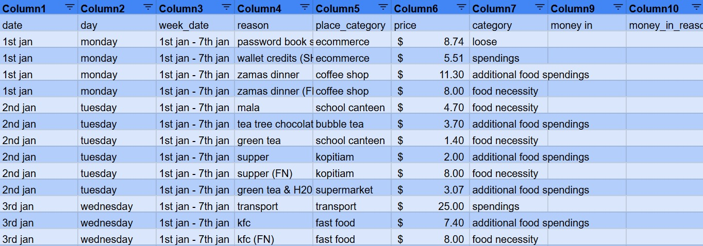

☰

Built a predictive analytics pipeline with Python libraries for profiling, cleaning, visualization, modeling, clustering, and recommendations.
Designed and developed a full-stack website using HTML for front-end design, JavaScript for functionality, and MySQL for back-end integration.
Conducted statistical tests(chi-square, correlation) in excel & python to validate hypothesis and assess data relationships, and applied linear regression for dataset splitting and model accuracy.

Built a data warehouse using SQL and used Alteryx for ETL and to create visuals showing trends and insights for business improvement.

Performed cleaning, transformation, clustering, and regression analysis using KNIME, and built Power BI dashboards to uncover customer behavior and insights.

Built a data pipeline for cloud-based analytics solutions.

Designed and developed app prototypes, including rewards and music apps, with a focus on user experience and intuitive interfaces.
Created an Excel-based personal finance tracker using formulas to monitor, categorize, and sum up spending for effective budget management.
Performed data cleaning and integration, developed visualizations, and combined them into a cohesive data story using Tableau to deliver actionable insights to stakeholders through cross-collaboration with other domains.
Performed data cleaning and integration, developed visualizations, and combined them into a cohesive data story using Tableau to deliver actionable insights to stakeholders.
Predictive modeling using Python was used to uncover key drivers, make accurate predictions, and generate actionable recommendations for improved decision-making.
Used text analytic techniques to gather and analyze data, uncover insights, and generate actionable recommendations.
A combination of Python and SAS was used for prediction, identifying key factors, and deliver insights to stakeholders.